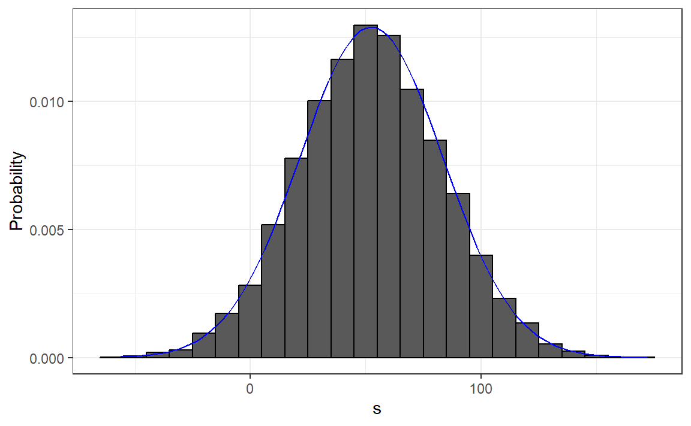

Foundations of Statistical Inference
https://rafalab.dfci.harvard.edu/dsbook-part-2/prob/sampling-models-and-clt.html
Sampling models
Many data generation procedures can be effectively modeled as draws from an urn.
We can model the process of polling likely voters as drawing 0s for one party and 1s for the other.
Epidemiologist assume subjects in their studies are a random sample from the population of interest.
In general, the data related to a specific outcome can be modeled as a random sample from an urn containing the outcomes for the entire population of interest.
Casino example
They want a range of values and, in particular, they want to know what’s the chance of losing money.
We will assume that 1,000 people will play, and that the only game available on the roulette wheel is to bet on red or black.
define a random variable \(S\) that will represent the casino’s total winnings.

Construct the urn
A roulette wheel has 18 red pockets, 18 black pockets and 2 green ones.
So playing a color in one game of roulette is equivalent to drawing from this urn:
Construct the RV \(S\)
The 1,000 outcomes from 1,000 people playing are independent draws from this urn.
If red comes up, the gambler wins, and the casino loses a dollar, resulting random variable being -$1.
Otherwise, the casino wins a dollar, and the random variable is $1.
Sampling models
This is a sampling model, as it models the random behavior through the sampling of draws from an urn.
The total winnings \(S\) is simply the sum of these 1,000 independent draws:
If you rerun the code above, you see that \(S\) changes every time.
\(S\) is a random variable.
The probability distributions
The probability distribution of a random variable informs us about the probability of the observed value falling in any given interval.
For example, if we want to know the probability that we lose money, we are asking the probability that \(S\) is in the interval \((-\infty,0)\).
\(F(a) = \mbox{Pr}(S\leq a)\)
We can estimate the distribution function for \(S\) using a Monte Carlo simulation.
The Monte Carlo simulation
- we run the experiment of having 1,000 people repeatedly play roulette, \(B = 10,000\) times:
- To approx \(F(a)\) (how often did we get sums \(\le a\))
- How likely is it that the casino will lose money?
The histrogram of \(S\)
- We can visualize the distribution of \(S\) by creating a histogram

ss <- seq(min(s), max(s), length = 100)
normal_density <- data.frame(s = ss, f = dnorm(ss, mean(s), sd(s)))
data.frame(s = s) |> ggplot(aes(s, after_stat(density))) +
geom_histogram(color = "black", binwidth = 10) +
ylab("Probability") +
geom_line(data = normal_density, mapping = aes(s,f), color = "blue") Standard Error
Since we have the original values from which the distribution is created, we can easily compute these with
mean(s)andsd(s).This average and this standard deviation have special names; they are referred to as the expected value and standard error (SE) of the random variable \(S\).
Distributions versus probability distributions
Before we continue, let’s establish an important distinction and connection between the distribution of a list of numbers and a probability distribution.
Any list of numbers \(x_1,\dots,x_n\) has a distribution.
It does not have a probability distribution because they are not random.
Distributions for a list
We define \(F(a)\) as the function that indicates what proportion of the list is less than or equal to \(a\).
we also define the average and standard deviation.
These are determined with a straightforward operation involving the vector containing the list of numbers, denoted as
x:
probability distributions for a rv
A random variable \(X\) has a distribution function.
To define this, we do not need a list of numbers; it is a theoretical concept.
We define the distribution as the \(F(a)\) that answers the question: What is the probability that \(X\) is less than or equal to \(a\)?
Sample distribution
However, if \(X\) is defined by drawing from an urn containing numbers, and we perform experiments, then there is a list: the list of numbers inside the urn.
In this case, the distribution of that (sample) list is the (sample) probability distribution of \(X\), and the average and standard deviation of that list are the expected value and standard error of the random variable.
Sample probability distributions
Another way to think about it without involving an urn is by running a Monte Carlo simulation and generating a very large list of outcomes of \(X\).
These outcomes form a list of numbers, and the distribution of this list will be a very good approximation of the probability distribution of \(X\).
The longer the list, the better the approximation.
The average and standard deviation of this list will approximate the expected value and standard error of the random variable.
Notation for random variables
In statistical textbooks, upper case letters denote random variables,
Lower case letters are used for observed values.
For example, you will see events defined as \(X \leq x\).
Here \(X\) is a random variable and \(x\) is an arbitrary value and not random.
Examples of rv
So, for example, \(X\) might represent the number on a die roll and \(x\) will represent an actual value we see: 1, 2, 3, 4, 5, or 6.
In this case, the probability of \(X=x\) is 1/6 regardless of the observed value \(x\).
We can discuss what we expect \(X\) to be, what values are probable, but we can’t discuss what value \(X\) is.
Once we have data, we do see a realization of \(X\).
The expected value
Notation: \[\mbox{E}[X]\]
A random variable will vary around its expected value in a manner that if you take the average of many, many draws, the average will approximate the expected value.
This approximation improves as you take more draws, making the expected value a useful quantity to compute.
The expected value for discrete rv
For discrete random variable with possible outcomes \(x_1,\dots,x_n\), \[ \mbox{E}[X] = \sum_{i=1}^n x_i \,\mbox{Pr}(X = x_i) \]
In the case that we are picking values from an urn, and each value \(x_i\) has an equal chance \(1/n\) of being selected \[ \mbox{E}[X] = \frac{1}{n}\sum_{i=1}^n x_i \]
The expected value for continuous r.v.
- If \(X\) is a continuous random variable with a range of values \(a\) to \(b\) and a probability density function \(f(x)\), this sum transforms into an integral:
\[ \mbox{E}[X] = \int_a^b x f(x) \]
The expected value:Example
In the urn used to model betting on red in roulette, we have 20 one-dollar bills and 18 negative one-dollar bills, \[ \mbox{E}[X] = (20 + (-18) /38 \] which is about 5 cents.
You might consider it a bit counterintuitive to say that \(X\) varies around 0.05 when it only takes the values 1 and -1.
To make sense of the expected value in this context is by realizing that, if we play the game over and over, the casino wins, on average, 5 cents per game.
The expected value: by MC
The expected value with two outcomes
- In general, if the urn has two possible outcomes, say \(a\) and \(b\), with proportions \(p\) and \(1-p\) respectively,
\[\mbox{E}[X] = ap + b(1-p)\]
- One way to see this is: observe that if there are \(n\) beads in the urn, then we have \(np\) \(a\)’s and \(n(1-p)\) \(b\)’s, and because the average is the sum: \(n\times a \times p + n\times b \times (1-p)\) divided by the total \(n\), we get the average \(ap + b(1-p)\).
The expected value of a sum of draws
the expected value of the sum of the draws is the number of draws \(\times\) the average of the numbers in the urn.
Therefore, if 1,000 people play roulette, the casino expects to win, on average, about 1,000 \(\times\) $0.05 = $50.
How different can one observation be from the expected value? The casino really needs to know this.
What is the range of possibilities? If negative numbers are too likely, they will not install roulette wheels.
The SE for discrete r.v.
\[\mbox{SE}[X] = \sqrt{\mbox{Var}[X]}\]
For discrete random variable with possible outcomes \(x_1,\dots,x_n\),
\[ \mbox{SE}[X] = \sqrt{\sum_{i=1}^n \left(x_i - E[X]\right)^2 \,\mbox{Pr}(X = x_i)}, \]
- which you can think of as the expected average distance of \(X\) from the expected value.
SE and SD
- In the case that we are picking values from an urn where each value \(x_i\) has an equal chance \(1/n\) of being selected, the above equation is simply the standard deviation of of the \(x_i\)s.
\[ \mbox{SE}[X] = \sqrt{\frac{1}{n}\sum_{i=1}^n (x_i - \bar{x})^2} \mbox{ with } \bar{x} = \frac{1}{n}\sum_{i=1}^n x_i \]
The SE for a continuous r.v.
- If \(X\) is a continuous random variable, with range of values \(a\) to \(b\) and probability density function \(f(x)\), this sum turns into an integral:
\[ \mbox{SE}[X] = \sqrt{\int_a^b \left(x-\mbox{E}[X]\right)^2 f(x)\,\mathrm{d}x} \]
The SD of a r.v. with two values
- if an urn contains two values \(a\) and \(b\) with proportions \(p\) and \((1-p)\), respectively, the standard deviation is: \[SE=| b - a |\sqrt{p(1-p)}.\]
- So in our roulette example,
\[ SE= | 1 - (-1) | \sqrt{10/19 \times 9/19} \]
The SE for the sum and the mean
- if draws are independent, then the standard error of the sum is given by the equation:
\[ \sqrt{\mbox{number of draws}} \times \mbox{ SD of the numbers in the urn} \] - if draws are independent, then the standard error of the mean is
\[ \frac{ \mbox{ SD of the numbers in the urn} }{\sqrt{\mbox{number of draws}} } \]
Example: SE of a sum
- the sum of 1,000 people playing has standard error of about $32:
As a result, when 1,000 people play, the casino is expected to win $50 with a standard error of $32.
It therefore seems like a safe bet to install more roulette wheels.
But we still haven’t answered the question: How likely is the casino to lose money? The CLT will help in this regard.
Note
The exact probability for the casino winnings can be computed precisely, rather than approximately, using the binomial distribution.
However, here we focus on the CLT, which can be applied more broadly to sums of random variables in a way that the binomial distribution cannot.
Central Limit Theorem
The Central Limit Theorem (CLT) tells us that when the number of draws, also called the sample size, is large, the probability distribution of the sum of the independent draws is approximately normal (which can be described by \(\mu\) and \(\sigma\))
Given that sampling models are used for so many data generation processes, the CLT is considered one of the most important mathematical insights in history.
Central Limit Theorem: Example
- We previously ran this Monte Carlo simulation:
Theoretical values and simulated values
- The Central Limit Theorem (CLT) tells us that the sum \(S\) is approximated by a normal distribution with the expected value and standard error:
- The theoretical values above match those obtained with the Monte Carlo simulation:
Using Central Limit Theorem
- compute the probability of the casino losing money:
- which is also in very good agreement with our Monte Carlo result:
How large is large in the CLT?
The CLT works when the number of draws is large, but “large” is a relative term.
In many circumstances, as few as 30 draws is enough to make the CLT useful.
In some specific instances, as few as 10 is enough.
However, these should not be considered general rules.
Note that when the probability of success is very small, much larger sample sizes are needed.
Events with small probability
By way of illustration, let’s consider the lottery.
In the lottery, the chances of winning are less than 1 in a million.
Thousands of people play so the number of draws is very large.
Yet the number of winners, ranges between 0 and 4.
This sum is certainly not well approximated by a normal distribution, so the CLT does not apply, even with the very large sample size.
Poisson distribution
In these cases, the Poisson distribution is more appropriate.
You can explore the properties of the Poisson distribution using
dpoisandppois.You can generate random variables following this distribution with
rpois.You can learn about the Poisson distribution in any probability textbook and even Wikipedia
Statistical properties of averages: 1
\[ \mbox{E}[X_1+X_2+\dots+X_n] = \mbox{E}[X_1] + \mbox{E}[X_2]+\dots+\mbox{E}[X_n] \]
- If \(X\) represents independent draws from the urn, then they all have the same expected value.
\[ \mbox{E}[X_1+X_2+\dots+X_n]= n\mu \]
Property 2
- The expected value of a non-random constant times a random variable is the non-random constant times the expected value of a random variable. \[ \mbox{E}[aX] = a\times\mbox{E}[X] \]
- If we change the units of a random variable, such as from dollars to cents, the expectation should change in the same way.
Property 2
- A consequence of the above two facts is that the expected value of the average of independent draws from the same urn is the expected value of the urn, denoted as \(\mu\) again:
\[ \begin{aligned} \mbox{E}[(X_1+X_2+\dots+X_n) / n] & = \mbox{E}[X_1+X_2+\dots+X_n] / n \\ & = n\mu/n = \mu \end{aligned} \]
Property 3
- The square of the standard error of the sum of independent random variables is the sum of the square of the standard error of each random variable.
\[ \begin{aligned} \mbox{SE}[X_1+X_2+\dots+X_n] = & \\ \sqrt{\mbox{SE}[X_1]^2 + \mbox{SE}[X_2]^2+\dots+\mbox{SE}[X_n]^2 } & \end{aligned} \]
Property 4
The standard error of a non-random constant times a random variable is the non-random constant times the random variable’s standard error.
As with the expectation:
\[ \mbox{SE}[aX] = a \times \mbox{SE}[X] \]
- To see why this is intuitive, again think of units.
SE of a mean
- the standard error of the average of independent draws from the same urn is the standard deviation \(\sigma\) of the urn divided by the square root of \(n\) (the number of draws),
\[ \begin{aligned} \mbox{SE}[(X_1+X_2+\dots+X_n) / n] &= \mbox{SE}[X_1+X_2+\dots+X_n]/n \\ &= \sqrt{\mbox{SE}[X_1]^2+\mbox{SE}[X_2]^2+\dots+\mbox{SE}[X_n]^2}/n \\ &= \sqrt{\sigma^2+\sigma^2+\dots+\sigma^2}/n\\ &= \sqrt{n\sigma^2}/n\\ &= \sigma / \sqrt{n} \end{aligned} \] ## Law of large numbers
An important implication above is that the standard error of the average becomes smaller and smaller as \(n\) grows larger.
When \(n\) is very large, then the standard error is practically 0 and the average of the draws converges to the average of the urn.
This is known as the law of large numbers or the law of averages.
Property 5
If \(X\) is a normally distributed random variable, then if \(a\) and \(b\) are non-random constants, \(aX + b\) is also a normally distributed random variable.
All we are doing is changing the units of the random variable by multiplying by \(a\), then shifting the center by \(b\).
Notation
Note that statistical textbooks use the Greek letters \(\mu\) and \(\sigma\) to denote the expected value and standard error, respectively.
This is because \(\mu\) is the Greek letter for \(m\), the first letter of mean, which is another term used for expected value.
Similarly, \(\sigma\) is the Greek letter for \(s\), the first letter of standard error.
The assumption of independence is important
If \(X_1, X_2, \dots, X_n\) are not independent (correlated)
If the correlation coefficient among the \(X\) variables is \(\rho\) \[ \mbox{SE}\left(\bar{X}\right) = \sigma \sqrt{\frac{1 + (n-1) \rho}{n}} \]
as \(\rho\) approaches its upper limit of 1, the SE increases.
When \(\rho = 1\), \(\mbox{SE}(\bar{X})=\sigma\), unaffected by the sample size \(n\).
Misinterpretation of the law of averages
For example, if you toss a coin 5 times and see a head each time, you might hear someone argue that the next toss is probably a tail because of the law of averages: on average we should see 50% heads and 50% tails.
A similar argument would be to say that red “is due” on the roulette wheel after seeing black come up five times in a row.
Yet these events are independent so the chance of a coin landing heads is 50%, regardless of the previous 5.
The same principle applies to the roulette outcome.
Correct interpretation of the law of averages
The law of averages applies only when the number of draws is very large and not in small samples.
After a million tosses, you will definitely see about 50% heads regardless of the outcome of the first five tosses.
Another funny misuse of the law of averages is in sports when TV sportscasters predict a player is about to succeed because they have failed a few times in a row.